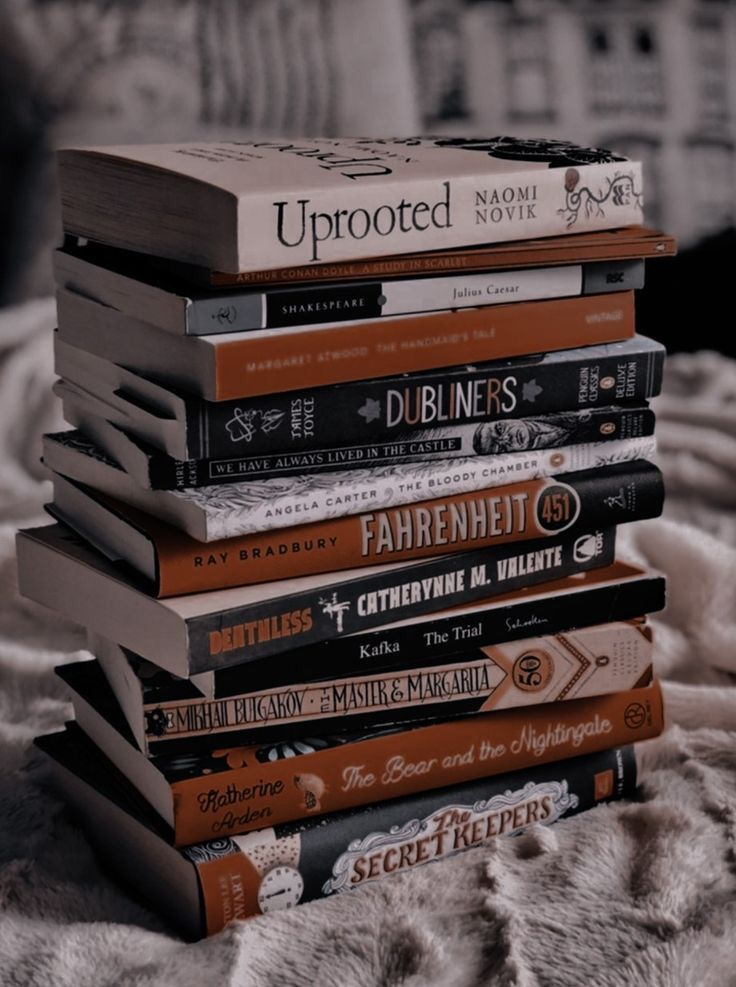
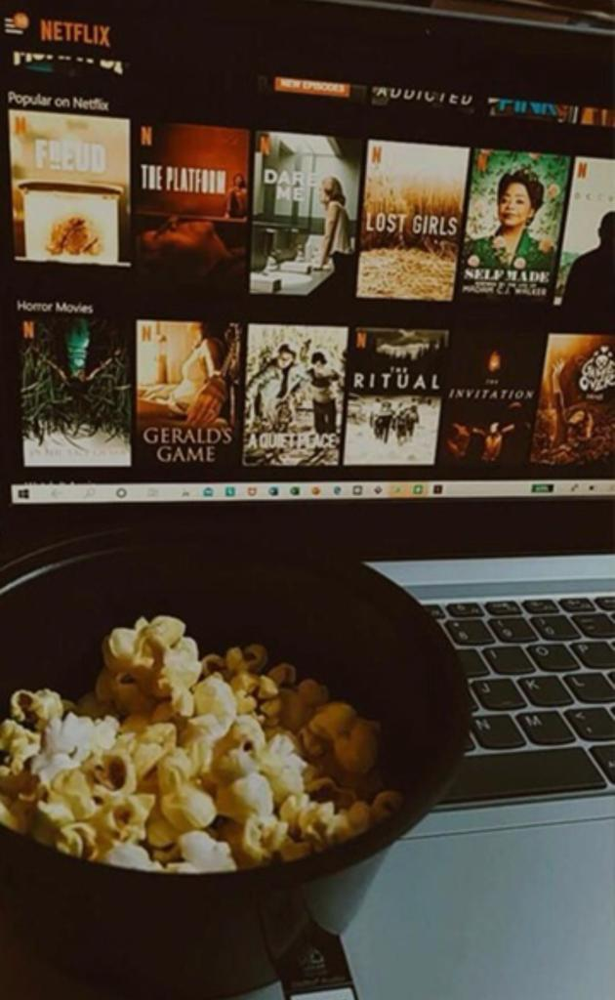

Curiosidades
nasci no araripe(moro aqui desde de então)
meus pais são separados desde que eu tinha 3 anos
tenho 4 irmãos
minha cor preferida é roxo
tenho um hábito de ler muitos livros
gosto de assistir séries e filmes de comédia

